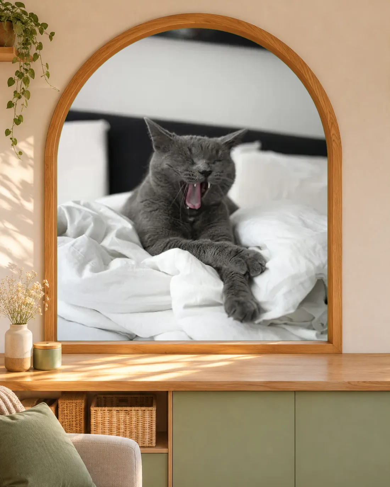
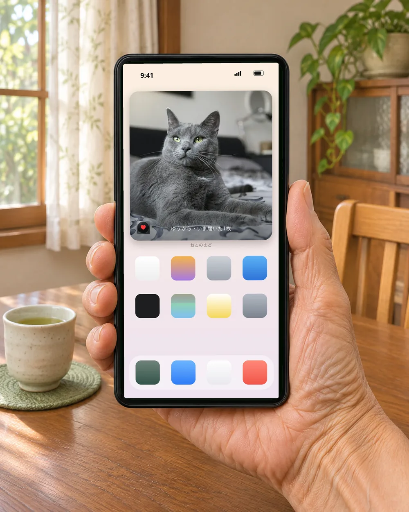

撮りためた猫の写真に、
毎日会える。
ホーム画面に、毎日ちがう1枚。
無料ではじめられます
アプリの中は、猫だけ。


スクショもレシートも、まざりません。選ぶ手間も、整理もいりません。
猫を見つけるのは、iPhone の中。そのために写真を外へ送ることはありません。
きょうは、
どの子だろう。
ホーム画面のまどは、毎日くもって届きます。札をタップすると、きょうの1枚に会えます。
忘れていた1枚が、
帰ってくる。
1年前のきょう、誕生日、うちに来て 4年。そんな日には、その日の1枚が札つきで帰ってきます。
うちの子のことは、
ぜんぶここに。
誕生日、ワクチン、病院、体重。うちの子のことを1ページに。もしものときは、迷子のチラシや病院で見せるメモが、すぐに作れます。
離れた家族の
ホーム画面にも。

トークだと流れてしまう1枚が、実家のホーム画面に。ハートが返ってきます。招待された人はずっと無料、まどを作るのは Plus です。
毎月1日、
先月が1冊に。
先月の猫の写真が、1冊の作品になって届きます。Plus（はじめの14日間は無料）。
まずは無料で
無料
0円
猫の写真の一覧・毎日ちがう1枚・もしものときの準備・招待されたまど
ねこのまど Plus
980円／月
月の作品と1年の作品・まどを作る・家族で書く手帳・記録の保存
はじめの14日間は無料
- 広告もトラッキングもありません
価格は税込みです。Plusは月ごとの自動更新で、いつでも解約できます。やめても、写真とメモは消えません。
よくある質問
写真が勝手に送られたりしませんか？
送りません。猫かどうかはiPhoneの中で見分けます。まどに届くのは、自分で選んで「届ける」を押した写真だけです。
家族も払う必要がありますか？
いいえ。招待されてまどや家族の手帳に入る人は無料です。
14日間のお試しが終わったら？
解約していれば無料のまま使えます。写真・メモ・まどの写真は消えません。
iPhoneの「写真」アプリと何が違いますか？
猫の写真だけを集めて、毎日ちがう1枚をホーム画面に届けます。今ある写真をそのまま使うので、移す必要はありません。
写真を届けられないときは？
iPhoneの「設定」→「プライバシーとセキュリティ」→「センシティブな内容の警告」がオンのときは、届ける前と表示する前に、iPhoneの中で写真を確かめます。センシティブな写真は届けず、表示もしません。
Androidで使えますか？
いいえ。iOS 17.1以降のiPhoneで使えます。

うちの子に、毎日会いに。
iOS 17.1以降のiPhone